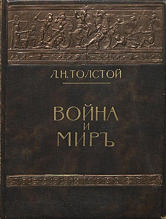
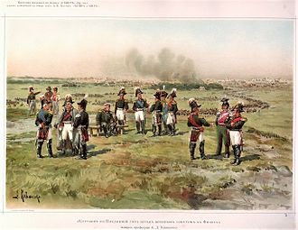
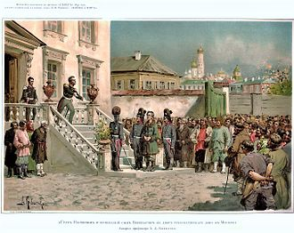

История написания романа
Замысел эпопеи формировался задолго до начала работы над тем текстом, который известен под названием «Война и мир». В наброске предисловия к «Войне и миру» Толстой писал, что в 1856 году начал писать повесть, «герой которой должен был быть декабрист, возвращающийся с семейством в Россию. Невольно от настоящего я перешёл к 1825 году… Но и в 1825 году герой мой был уже возмужалым, семейным человеком. Чтобы понять его, мне нужно было перенестись к его молодости, и молодость его совпала с … эпохой 1812 года… Ежели причина нашего торжества была не случайна, но лежала в сущности характера русского народа и войска, то характер этот должен был выразиться ещё ярче в эпоху неудач и поражений…» Так Лев Николаевич постепенно пришёл к необходимости начать повествование с 1805 года.
Главная тема — историческая судьба русского народа в Отечественной войне 1812 года. В романе выведено более 550 персонажей, как вымышленных, так и исторических. Лучших своих героев Л. Н. Толстой изображает во всей их душевной сложности, в непрерывных поисках истины, в стремлении к самосовершенствованию. Таковы князь Андрей, граф Николай, граф Пьер, графиня Наташа и княжна Марья. Отрицательные герои лишены развития, динамики, движений души: Элен, Анатоль.


Важнейшее значение в романе имеют философские взгляды писателя. Публицистические главы предваряют и объясняют художественное описание событий. Фатализм Толстого связан с его пониманием стихийности истории как «бессознательной, общей, роевой жизни человечества». Главная мысль романа, по словам самого Толстого, — «мысль народная». Народ, в понимании Толстого — главная движущая сила истории, носитель лучших человеческих качеств. Главные герои проходят путь к народу (Пьер на Бородинском поле; «наш барин» — называли Безухова солдаты). Идеал Толстого воплощён в образе Платона Каратаева. Идеал женский — в образе Наташи Ростовой. Кутузов и Наполеон — нравственные полюсы романа: «Нет величия там, где нет простоты, добра и правды». «Что нужно для счастья? Тихая семейная жизнь… с возможностью делать добро людям» (Л. Н. Толстой).
К работе над повестью Л. Н. Толстой возвращался восемь раз. В начале 1861 года он читал главы из романа «Декабристы», написанные в ноябре 1860 — начале 1861 года, Тургеневу и сообщал о работе над романом Александру Герцену. Однако работа несколько раз откладывалась, пока в 1863—1869 гг. не был написан роман «Война и мир». Некоторое время роман-эпопея воспринимался Толстым как часть повествования, которое должно было закончиться возвращением Пьера и Наташи из сибирской ссылки в 1856 году (именно об этом идёт речь в 3 сохранившихся главах романа «Декабристы»). Попытки работы над этим замыслом предпринимались Толстым последний раз в конце 1870-х годов, после окончания «Анны Карениной».


В 1865—1866 годах в журнале «Русский вестник» под названием «1805 год» появился текст, соответствующий первой и второй частям первого тома романа. Осенью 1867 года Толстой едет на Бородинское поле, чтобы на месте уточнить все детали для описания Бородинского сражения. После заключения сделки в июне 1867 года с П. И. Бартеневым (издатель «Русского архива») на издание романа отдельной книгой, Толстой продолжал корректировать написанное и дописывал окончание романа в 1868 (и даже в начале 1869 года). В 1868—1869 годах роман «Война и мир» был впервые издан полностью отдельным изданием (в шести томах, тиражом почти 5000 экземпляров), причём за счёт автора (в позднейших изданиях — четыре). Книга имела большой успех. Тут же на волне успеха в 1869 году с минимальными исправлениями (в первых 4 томах) выходит второе издание романа в 6 томах.
Признанный критикой всего мира величайшим эпическим произведением новой европейской литературы, «Война и мир» поражает уже с чисто технической точки зрения размерами своего беллетристического полотна. Только в живописи можно найти некоторую параллель в огромных картинах Паоло Веронезе в венецианском Дворце дожей, где тоже сотни лиц выписаны с удивительною отчётливостью и индивидуальным выражением. В романе Толстого представлены все классы общества, от императоров и королей до последнего солдата, все возрасты, все темпераменты и на пространстве целого царствования Александра I. Что ещё более возвышает его достоинство как эпоса — это данная им психология русского народа. С поражающим проникновением изобразил Лев Николаевич Толстой настроения толпы, как высокие, так и самые низменные и зверские (например, в знаменитой сцене убийства Верещагина).
Везде Толстой старается схватить стихийное, бессознательное начало человеческой жизни. Вся философия романа сводится к тому, что успех и неуспех в исторической жизни зависит не от воли и талантов отдельных людей, а от того, насколько они отражают в своей деятельности стихийную подкладку исторических событий. Отсюда его любовное отношение к Кутузову, сильному, прежде всего, не стратегическими знаниями и не геройством, а тем, что он понял тот чисто русский, не эффектный и не яркий, но единственно верный способ, которым можно было справиться с Наполеоном. Отсюда же и нелюбовь Толстого к Наполеону, так высоко ценившему свои личные таланты; отсюда, наконец, возведение на степень величайшего мудреца скромнейшего солдатика Платона Каратаева за то, что он сознаёт себя исключительно частью целого, без малейших притязаний на индивидуальное значение. Философская или, вернее, историософическая мысль Толстого большей частью проникает его великий роман — и этим-то он и велик — не в виде рассуждений, а в гениально схваченных подробностях и цельных картинах, истинный смысл которых нетрудно понять всякому вдумчивому читателю.
Позже Толстой скептически относился к своим романам. В январе 1871 года Лев Николаевич отправил Фету письмо: «Как я счастлив…, что писать дребедени многословной вроде „Войны“ я больше никогда не стану» 6 декабря 1908 года Л. Н. Толстой записал в дневнике: «Люди любят меня за те пустяки — „Война и мир“ и т. п., которые им кажутся очень важными» Летом 1909 года один из посетителей Ясной Поляны выражал свой восторг и благодарность за создание «Войны и мира» и «Анны Карениной». Толстой ответил: «Это всё равно, что к Эдисону кто-нибудь пришёл и сказал бы: „Я очень уважаю вас за то, что вы хорошо танцуете мазурку“. Я приписываю значение совсем другим своим книгам». Впрочем, едва ли Лев Николаевич действительно отрицал важность своих предшествующих творений. На вопрос японского писателя и философа Токутоми Рока в 1906 году, какое своё произведение он любит больше всего, автор ответил: «Роман „Война и мир“». Мысли, основанные в романе, звучат и в поздних религиозно-философских произведениях Толстого.
Существовали и разные варианты названия романа: «1805 год» (под этим названием публиковался отрывок из романа), «Всё хорошо, что хорошо кончается» и «Три поры». По мнению И. Бе́рлина, «более чем вероятно» предположение о том, что Л. Н. Толстой заимствовал название своего романа у П. Ж. Прудона, опубликовавшего книгу La Guerre et la Paix (рус. «Война и мир»). Публикация этой книги состоялась в том же 1861 году, что и посещение Л. Н. Толстым П. Ж. Прудона. Вместе с тем, И. Берлин отмечал, что «найти что-то сугубо прудонистское в „Войне и мире“ Толстого, за исключением названия, весьма затруднительно»[9][10]. Толстой писал роман на протяжении 6 лет[11], с 1863 по 1869 годы. По историческим сведениям, он вручную переписал его восемь раз, а отдельные эпизоды писатель переписывал более 26 раз. Исследователь Э. Е. Зайденшнур насчитывает 15 вариантов начала романа. В произведении насчитывают 559 действующих лиц. Рукописный фонд романа составляет 5202 листа.
Источники Толстого
При написании романа Толстой использовал следующие научные труды: академическая история войны академика А. И. Михайловского-Данилевского, история М. И. Богдановича, «Жизнь графа Сперанского» М. Корфа, «Биография Михаила Семёновича Воронцова» М. П. Щербинина, о масонстве — Карл Губерт Лобрейх фон-Плуменек, о Верещагине — Иван Жуков; из французских историков — Тьер, А. Дюма-ст., Жорж Шамбре, Максимельен Фуа, Пьер Ланфре. Толстой также использовал воспоминания участников и современников Отечественной войны: Алексей Бестужев-Рюмин, Наполеон Бонапарт, Сергей Глинка, Фёдор Глинка, Денис Давыдов, Степан Жихарев, Алексей Ермолов, Иван Липранди, Фёдор Корбелецкий, Краснокутский, Александр Григорьевич, Василий Перовский, Илья Радожицкий, Иван Скобелев, Михаил Сперанский, Александр Шишков; переписка М. А. Волковой и В. А. Ланской. Из французских мемуаристов — Боссе, Жан Рапп, Филипп де Сегюр, Огюст Мармон, «Мемориал Святой Елены» Лас-Каза.
Из беллетристики на Толстого касательно повлияли русские романы Р. Зотова «Леонид, или Некоторые черты из жизни Наполеона», М. Загоскина — «Рославлев, или Русские в 1812 году». Также британские романы — Уильяма Теккерея «Ярмарка тщеславия» и Мэри Элизабет Брэддон «Аврора Флойд[en]» — по воспоминаниям Т. А. Кузьминской, писатель прямо указывал, что характер главной героини последнего напоминает Наташу.
Имена некоторых героев, в том числе Наташи Ростовой, и описание семейных сцен Ростовых Толстой взял из неопубликованной повести своей жены С. А. Берс «Наташа», написанной до свадьбы летом 1862 года.
Центральные персонажи
- Граф Пьер (Пётр Кириллович) Безухов.
- Граф Николай Ильич Ростов — старший сын Ильи Андреевича Ростова.
- Наташа (Наталья Ильинична) Ростова — младшая дочь Ростовых, в браке графиня Безухова, вторая жена Пьера.
- Соня (Софья Александровна) — племянница графа Ильи Андреевича, живущая в семье Ростовых.
- Князь Николай Андреевич Болконский — видный деятель екатерининской эпохи. Прототипом является дед Л. Н. Толстого по матери, представитель древнего рода Волконских.
_by_shakko.jpg)
- Князь Андрей Николаевич Болконский (фр. André) — сын князя Николая Андреевича.
- Елизавета Карловна Болконская (Лиза, Lise) (урожд. Мейнен), жена князя Андрея
- Княжна Мария Николаевна Болконская (фр. Marie) — дочь князя Николая Андреевича, сестра князя Андрея, в замужестве графиня Ростова (жена Николая Ростова). Прототипом считается Мария Николаевна Волконская (в замужестве Толстая), мать Л. Н. Толстого
-
Князь Василий Сергеевич Курагин. Вероятным прототипом является Куракин, Алексей Борисович
-
Элен (Елена Васильевна) Курагина — дочь Василия Курагина. Первая жена Пьера Безухова
- Анатоль (Анатолий Васильевич) Курагин — младший сын князя Василия.
- Фёдор Иванович Долохов — офицер лейб-гвардии Семёновского полка. Его прототипами послужили Руфин Дорохов (сын Ивана Дорохова) и Александр Фигнер, дуэлянт Фёдор Толстой-Американец[15].
- Марья Ивановна Долохова — мать Долохова.
- Платон Каратаев — солдат Апшеронского пехотного полка.
- Капитан Тушин — капитан артиллерийского корпуса. Прототипом его послужил штабс-капитан артиллерии Я. И. Судаков.
- Василий Дмитриевич Денисов — друг Николая Ростова. Прототипом послужил Денис Давыдов.
- Мария Дмитриевна Ахросимова — знакомая семьи Ростовых. Прототипом Ахросимовой послужила вдова генерал-майора Настасья Дмитриевна Офросимова.
В романе насчитывают 559 действующих лиц. Около 200 из них — исторические лица.
Сюжет
В романе обилие глав и частей, большинство из которых имеет сюжетную законченность. Короткие главы и множество частей позволяют Толстому перемещать повествование во времени и пространстве и благодаря этому уместить в одном романе сотни эпизодов.
I том
Действия I тома описывают события войны в союзе с Австрией против Наполеона в 1805—1807 годах.
1 часть
На правах друга Болконский убеждает Пьера не участвовать в кутежах, которые затевает Анатоль Курагин, сын князя Василия, доставляющий отцу немало хлопот своей разгульной жизнью. После возвращения из-за границы Пьер постоянно проводит своё время в компании Курагина, Долохова и других офицеров. Этот образ жизни не соответствует Безухову, обладающему возвышенной душой и добрым сердцем, но не имеющим твёрдого характера. Очередной разгул заканчивается тем, что Пьер был отправлен в Москву, Долохов разжалован в солдаты, а дело с Анатолем замял его отец.
Из Петербурга действие переносится в Москву, где в доме Ростовых празднуют именины графини Ростовой и её младшей дочери Наташи. Здесь мы знакомимся со всей семьёй Ростовых: графиней Натальей Ростовой, её мужем графом Ильёй Ростовым, их детьми: Верой, Николаем, Наташей и Петей, а также племянницей графа Соней. Обстановка в семье Ростовых противопоставляется приёму Шерер: здесь все проще, искренней, добрей. Здесь же завязываются две любовные линии: Соня и Николай Ростов, Наташа и Борис Друбецкой.
Соня и Николай пытаются скрывать свои отношения от всех, поскольку их любовь не может привести ни к чему хорошему, так как они троюродные сестра и брат. Но Николай отправляется на войну, и Соня переживает за него. Разговор Сони со своим братом, а также их поцелуй видит Наташа Ростова. Она тоже хочет любить кого-то, поэтому напрашивается на откровенный разговор с Борисом и целует его. Праздник продолжается. На нём также присутствует Пьер Безухов, который здесь знакомится с совсем юной Наташей Ростовой. Приезжает Марья Дмитриевна Ахросимова — влиятельная и уважаемая дама, резкая и категоричная в своих суждениях. Праздник в самом разгаре. Граф Ростов, к восторгу всех присутствующих, танцует с Марьей Дмитриевной свой любимый танец — «Данилу Купора».
В это время в Москве при смерти находится граф Безухов — отец Пьера и владелец огромного состояния. Князь Василий Курагин и три княжны Мамонтовы, являясь ближайшими родственниками старого графа, начинают борьбу за наследство. В борьбу также вмешивается и княгиня Друбецкая, мать Бориса. Дело осложняется тем, что в своём завещании граф пишет императору с просьбой узаконить Пьера (Пьер является незаконным сыном графа и без этой процедуры не может получить наследство) и завещает всё ему. План князя Василия состоит в том, чтобы уничтожить завещание и всё наследство поделить между своим семейством и княжнами. Цель Друбецкой — получить хотя бы небольшую часть наследства, чтоб иметь деньги для обмундирования своего сына, отправляющегося на войну. В результате разворачивается борьба за «мозаиковый портфель», в котором хранится завещание. Пьер, приезжая к своему умирающему отцу, снова чувствует себя чужим. Ему неуютно здесь. Он одновременно чувствует скорбь из-за смерти отца и неловкость из-за большого внимания, прикованного к нему.
Отправляясь на войну, Андрей Болконский оставляет свою беременную жену Лизу со своим отцом и сестрой, княжной Марьей, в фамильном имении Лысые Горы. Его отец, генерал-аншеф князь Николай Андреевич Болконский, вот уже несколько лет безвыездно живёт в своём имении. Он отличается прямотой своих суждений, суровостью и строгостью. Из своей дочери он хочет воспитать умную девушку, поэтому заставляет заниматься её математикой. Сама же княжна Марья безумно любит своего отца и брата, она очень чувствительна и набожна. Прощаясь с князем Андреем, она уговаривает его взять иконку. Незадолго до этого, Марья получает письмо от своей хорошей подруги Жюли Карагиной, которая пишет о том, что, по слухам, князь Василий хочет женить на ней своего сына Анатоля.
2 часть
Во второй части действие переносится в Австрию. Русская армия, совершив длительный переход, готовится к смотру в местечке Браунау. На смотр приезжает главнокомандующий армией — Михаил Илларионович Кутузов. Осматривая полки, он приветствует знакомых ему офицеров. На этом же смотре мы видим и разжалованного после случая с медведем Долохова. Кутузова сопровождают адъютанты: Несвицкий и уже знакомый нам Болконский.
Война продолжалась, войска Кутузова отступали, сжигая за собой мосты. Союзная австрийская армия под командованием генерала Мака была разгромлена. Кутузов отправляет Андрея Болконского с посланием о первой русской победе к австрийскому императору Францу.
Вскоре было дано Шёнграбенское сражение. Четырёхтысячная армия Багратиона должна была обеспечить отступление всей остальной армии Кутузова. Французы же решили, что перед ними вся русская армия.
В этом сражении очень ярко проявляется одна из основных тем всего романа — тема истинного и ложного патриотизма. Истинным героем битвы является Тушин, чьей батарее была обязана вся армия успехом всего сражения. Но скромный Тушин теряется, когда на совете его отчитывают за два потерянных орудия: он не хочет выдать своим ответом, что подкрепления не было, другого офицера. За Тушина заступается Андрей Болконский.
В Шёнграбенском сражении принимает участие и Павлоградский гусарский полк, где служит Николай Ростов, для которого данное сражение становится первым крупным сражением в жизни. Николай испытывает неподдельный страх: всё, что он представлял себе, оказывается лишь фантазией и сказкой, на самом же деле война предстаёт ужасным, леденящим зрелищем, где всё: и взрывы, и оружие, и боль, и смерть. И хоть Ростов не проявляет в сражении своей доблести, а скорее лишь показывает свою трусость, никто его не осуждает, так как его чувства понятны каждому.
3 часть
Пьер Безухов после смерти отца, получив полностью всё его наследство, становится, как один из самых богатых молодых людей России, «знатным женихом». Теперь он приглашён на все балы и приёмы, с ним хотят общаться. Князь Василий не упускает такой возможности и знакомит свою дочь красавицу Элен с Пьером, на которого та производит большое впечатление. Для сближения он устраивает Пьеру назначение в камер-юнкеры, настаивает, чтобы молодой человек остановился в его доме. Понимая необходимость понравиться богатому жениху, Элен ведёт себя обходительно, флиртует, а её родители всеми силами подталкивают Безухова к женитьбе. Молодой человек наивно верит в искренность такого отношения, ему кажется, что все его любят и уважают.
В это же время князь Василий решает женить своего сына Анатоля, надоевшего ему своими выходками и гулянками, на одной из самых богатых и знатных наследниц того времени — Марье Болконской. Василий со своим сыном приезжает в имение Болконских Лысые Горы и встречается с отцом будущей невесты. Старый князь надменно и настороженно относится к молодому человеку с сомнительной репутацией в светском обществе. Анатоль беспечен, привык вести разгульную жизнь и полагаться только на своего отца. Вот и теперь разговор складывается в основном между «старшим» поколением: князем Василием, представляющим своего сына, и старым князем Болконским. Несмотря на все своё презрение к Анатолю, князь Болконский оставляет выбор за самой Марьей, понимая к тому же, что для «некрасивой» княжны Марьи, никуда не выезжающей из имения, шанс выйти замуж за красавца Анатоля является удачей. Но сама Марья пребывает в раздумьях: она понимает все прелести замужества и, хоть и не любит Анатоля, надеется, что любовь придёт потом, однако она не хочет оставлять отца в одиночестве в его имении. Выбор становится очевидным, когда Марья видит, как Анатоль флиртует с мадемуазель Бурьен, её компаньонкой. Привязанность и любовь к отцу перевешивает, и княжна решительно отказывает Анатолю Курагину.
Вслед за тактическим отступлением под Шёнграбеном готовилось генеральное сражение — под Аустерлицем. К сражению была расписана подробнейшая диспозиция, которую, впрочем, осуществить было практически невозможно. На совете Вейротер зачитывает эту диспозицию, при этом Кутузов откровенно спит. Он, трезво сопоставляя силы русских и французов, заранее знает, что битва будет проиграна, а диспозиция Вейротера хороша лишь тем, что уже высочайше одобрена и изменить в ней ничего всё равно нельзя. По мнению Кутузова, лучшее, что они могут сделать перед завтрашним сражением, — это выспаться.
Принять участие в завтрашнем сражении должен и Андрей Болконский. Накануне ему не спится. Он долго обдумывает, что может принести ему завтрашний день. Он мечтает о славе, о счастливом случае, который сделает его известным. Князь Андрей ставит в пример Наполеона, которого прославило только одно сражение при Тулоне, после чего тот смог за несколько лет перекроить карту Европы. Болконский готов многим пожертвовать ради собственной славы: ему не жаль для этого ни семью, ни богатство, ни даже жизнь. Болконский предчувствует, что завтрашний день будет роковым для него, как и для всей военной кампании.

На следующее утро Наполеон, в день годовщины его коронования, в счастливом расположении духа, осмотрев места предстоящего сражения и дождавшись, когда солнце окончательно выйдет из тумана, отдаёт маршалам приказание начинать дело. Кутузов же, напротив, в то утро пребывает в изнурённом и раздражительном настроении. Он замечает путаницу в союзнических войсках и поджидает, когда соберутся все колонны. В это время он слышит позади себя крики и возгласы приветствия со стороны своей армии. Он отошёл на пару метров и прищурился, чтобы понять кто это. Ему показалось, что это целый эскадрон, спереди которого скакали два всадника на вороной и рыжей энглизированной лошади. Он понял, что это император Александр и Франц со своей свитой. Александр, прискакавший к Кутузову, резко задал вопрос: «Что ж вы не начинаете, Михаил Ларионович?» После небольшого диалога и разногласия Кутузова, было принято начать операцию.
Проехав с полверсты Кутузов остановился у заброшенного дома, у разветвления двух дорог, которые спускались в гору. Туман расходился, и в двух верстах были видны Французы. Один Адъютант заметил внизу на горе целый эскадрон неприятелей. Противник видится намного ближе, чем предполагалось ранее, и, услышав близкую стрельбу, свита Кутузова бросается бежать назад, где только что войска проходили мимо императоров. Болконский решает, что наступила та долгожданная минута, дошло дело и до него. Соскочив с лошади, он устремляется к упавшему из рук подпрапорщика знамени и, подхватив его, с криком «Ура!» бежит вперёд, в надежде, что расстроенный батальон побежит за ним. И, действительно, один за другим солдаты обгоняют его. Князь Андрей получает ранение и, без сил, падает на спину, где перед ним открывается лишь бесконечное небо, а всё прежнее становится пустым, ничтожным и не имеющим никакого значения. Бонапарт, после победного сражения, объезжает поле боя, отдавая последние приказания и рассматривая оставшихся убитых и раненых. Среди прочих Наполеон видит лежащего навзничь Болконского и велит снести его на перевязочный пункт.Первый том романа заканчивается тем, что князь Андрей, в числе других безнадёжных раненных, сдаётся на попечение жителей.
II том
Второй том можно поистине назвать единственным «мирным» во всем романе. Он отображает жизнь героев между 1806 и 1812 годами. Большая часть его посвящена личным отношениям героев, теме любви и поиска смысла жизни.
1 часть
Второй том начинается с приезда Николая Ростова домой, где его радостно встречает всё семейство Ростовых. Вместе с ним приезжает и его новый военный друг Денисов. В скором времени в Англицком клубе было организовано торжество в честь героя военной кампании князя Багратиона, на котором присутствовал весь высший свет. В течение всего вечера слышались тосты, прославлявшие Багратиона, а также императора. Про недавнее поражение никто не хотел вспоминать.
На праздновании присутствует и Пьер Безухов, который сильно изменился после женитьбы. На самом деле он чувствует себя глубоко несчастным, он начал понимать настоящее лицо Элен, которая во многом похожа на своего брата, а также его начинают мучить подозрения об измене его жены с молодым офицером Долоховым. По случайному стечению обстоятельств Пьер и Долохов оказываются сидящими друг напротив друга за столом. Вызывающе нахальное поведение Долохова раздражает Пьера, но последней каплей становится тост Долохова «за здоровье красивых женщин и их любовников». Все это послужило причиной того, что Пьер Безухов вызывает Долохова на дуэль. Николай Ростов становится секундантом Долохова, а Несвицкий — Безухова. На следующий день в 8 часов утра Пьер с секундантом приезжают в Сокольники и встречают там Долохова, Ростова и Денисова. Секундант Безухова пытается уговорить стороны примириться, но противники настроены решительно. Перед дуэлью выясняется неспособность Безухова даже держать пистолет как положено, в то время как Долохов — отменный дуэлянт. Противники расходятся, и по команде начинают идти на сближение. Безухов стреляет первым, и пуля попадает Долохову в живот. Безухов и зрители хотят прервать дуэль из-за раны, однако Долохов предпочитает продолжить и тщательно целится, однако истекает кровью и стреляет мимо. Ростов с Денисовым увозят раненого. На вопросы Николая о самочувствии Долохова, тот умоляет Ростова ехать к его обожаемой матери и подготовить её. Поехав исполнять поручение, Ростов узнаёт, что Долохов живёт со своей матерью и сестрой в Москве, и, вопреки чуть не варварскому поведению в обществе, является нежным сыном и братом.

Волнение Пьера, по поводу связи его жены с Долоховым, продолжается. Он размышляет о прошедшей дуэли и всё чаще задаёт себе вопрос: «Кто прав, кто виноват?» Когда Пьер, наконец, видится с Элен «с глазу на глаз», та начинает ругаться и презрительно посмеиваться над мужем, пользуясь его наивностью. Пьер говорит, что им лучше расстаться, в ответ слышит саркастичное согласие, «…ежели вы дадите мне состояние». Тогда в характере Пьера впервые сказывается порода отца: он чувствует увлечение и прелесть бешенства. Схватив мраморную доску со стола, он с криком «Я тебя убью!» замахивается на Элен. Та, устрашившись, выбегает из комнаты. Спустя неделю Пьер выдаёт жене доверенность на большую часть его состояния и отправляется в Петербург.
После получения в Лысых Горах известия о смерти князя Андрея при Аустерлицком сражении, старому князю приходит письмо от Кутузова, где сообщается, что на самом деле неизвестно, действительно ли Андрей погиб, потому как в числе найденных на поле сражения павших офицеров он не был поименован. Лизе, жене Андрея, родственники с самого начала решительно ничего не сообщают, дабы не ранить её. В ночь родов неожиданно приезжает излечившийся князь Андрей. Лиза не переносит роды и умирает. На её мёртвом лице Андрей читает укоризненное выражение: «Что вы со мной сделали?», которое впоследствии весьма долго не оставляет его. Новорождённому сыну дают имя Николай.
Во время выздоровления Долохова Ростов особенно сдружился с ним. И тот становится частым гостем в доме семьи Ростовых. Долохов влюбляется в Соню и делает ей предложение, но она отказывает ему, потому как всё ещё влюблена в Николая. Фёдор перед отъездом в армию устраивает прощальную пирушку для своих друзей, где не вполне честно обыгрывает Ростова на 43 тысячи рублей, таким образом отомстив ему за отказ Сони.
Василий Денисов проводит больше времени в обществе Наташи Ростовой. Вскоре делает ей предложение. Наташа не знает, как ей быть. Она бежит к матери, но та, поблагодарив Денисова за оказанную честь, согласия не даёт, потому что считает свою дочь ещё слишком молодой. Василий извиняется перед графиней, сказав на прощанье, что «боготворит» её дочь и всё их семейство, а следующим днём уезжает из Москвы. Сам же Ростов после отъезда своего друга ещё две недели пробыл дома, дожидаясь денег от старого графа, чтобы выплатить все 43 тысячи и получить расписку от Долохова.
2 часть
После своего объяснения с женой, Пьер едет в Петербург. В Торжке на станции, ожидая лошадей, он знакомится с масоном, который хочет ему помочь. Они начинают говорить о Боге, но Пьер — неверующий. Он говорит о том, как ненавидит свою жизнь. Масон убеждает его в обратном и уговаривает Пьера вступить в их ряды. Пьер, после долгих раздумий, проходит посвящение в масоны и после этого чувствует, что изменился.
К Пьеру приходит князь Василий. Они говорят об Элен, князь просит Безухова вернуться к жене, но Пьер отказывается и просит князя уйти. Пьер оставляет много денег на милостыню масонам. Пьер верил в объединение людей, но впоследствии полностью в этом разочаровался. В конце 1806 года началась новая война с Наполеоном. Шерер принимает Бориса. Он занял выгодное положение на службе. Он не хочет вспоминать о Ростовых. Элен проявляет к нему интерес и приглашает к себе. Борис становится близким человеком для дома Безуховых.
Княжна Марья заменяет Николеньке мать. Ребёнок внезапно заболевает. Марья и Андрей спорят, чем его лечить. Болконский пишет им письмо о будто бы одержанной победе. Ребёнок выздоравливает. Пьер занялся благотворительностью. Он везде соглашался с управляющим и начал заниматься делами. Он стал жить прежней жизнью. Весной 1807 Пьер собрался в Петербург. Он заехал в своё имение — там все хорошо, все по-прежнему, но кругом беспорядок. Пьер навещает князя Андрея, они начинают говорить о смысле жизни и о масонстве. Андрей говорит, что у него началось внутреннее возрождение. Ростов привязан к полку. Война возобновляется.
3 часть
Россия и Франция становятся союзниками, а между «двумя властелинами мира» устанавливаются хорошие отношения. Русские помогают своему бывшему врагу, французам, воевать против своего бывшего союзника, австрийцев.
Князь Андрей Болконский безвыездно живёт в своём имении, полностью поглощённый своими делами. Он активно занимается преобразованиями в своих имениях, много читает и становится одним из самых образованных людей своего времени. Однако Андрей не может найти смысла жизни и считает, что его век кончен.

Болконский по делам отправляется к графу Ростову. Там он встречается с Наташей и случайно подслушивает её разговор с Соней, в котором Ростова описывала красоту ночного неба и луны. Её речь пробуждает его душу. «Нет, жизнь не кончена в 31 год, — вдруг окончательно, беспеременно решил князь Андрей…» Болконский приезжает в Петербург и там знакомится со Сперанским. Этот человек становится его идеалом, и Андрей старается на него равняться. Сперанский даёт князю поручение — разработать раздел «Права лиц» в разрабатываемом Гражданском уложении, и Андрей с ответственностью подходит к этой задаче.
«Он видел в нём [Сперанском] разумного, строго-мыслящего, огромного ума человека, энергией и упорством достигшего власти и употребляющего её только для блага России. Сперанский в глазах князя Андрея был именно тот человек, разумно объясняющий все явления жизни, признающий действительным только то, что разумно, и ко всему умеющий прилагать мерило разумности, которым он сам так хотел быть…» Пьер разочаровывается в масонстве. Всех своих братьев он знал как слабых и ничтожных людей. Он всё чаще и чаще начинает задумываться над скупостью и меркантильностью своих товарищей. У него начинается депрессия.
«На Пьера опять нашла та тоска, которой он так боялся…» Пьер все больше и больше отдаляется от своей жены, чувствует себя униженным и оскорблённым. У Ростовых дела тоже шли скверно: денег на жизнь не было, но жить хотелось так же богато и праздно. Берг делает предложение Вере Ростовой, и она соглашается. Наташа снова сближается с Борисом Друбецким. Однако родители Наташи предпринимают нужные меры, чтобы Борис, влюблённый в Наташу, перестал бывать у Ростовых, что молодой человек, запутавшись в своих чувствах, с радостью делает.
31 декабря, в канун 1810 года, был бал у екатерининского вельможи. Это был первый настоящий бал Наташи Ростовой. Девушка очень воодушевлена и возбуждена из-за предстоящего события. Однако на балу никто к ней не подходит и не обращает на неё никакого внимания. Наташа огорчена. На этом же балу присутствовал князь Андрей Болконский. Пьер Безухов просит своего друга пригласить на танец Наташу Ростову, и князь с радостью соглашается, узнав в ней ту самую девушку, что несколько лет назад говорила о красоте луны. Между ними вспыхивают нежные чувства.
Князь Андрей понимает, что его интерес к преобразованиям уничтожен. Он разочарован в Сперанском, человеке без души, зеркально отражавшем других людей, но не имевшем своего внутреннего мира. Князь Андрей посещает Ростовых, где чувствует себя счастливым. После ужина Наташа, по просьбе домашних, спела. Князь Андрей, поражённый её пением до глубины души, чувствовал себя молодым и обновлённым. Следующий раз Андрей и Наташа встречаются на вечере у Берга, мужа Веры, сестры Наташи. Вера, заметившая интерес Андрея к Наташе завела разговор о детской влюблённости Наташи в Бориса, чем князь невольно заинтересовался. Большую часть вечера Андрей провёл рядом с Наташей в необычайно оживлённом настроении.
На следующий день Андрей приехал к Ростовым на обед и пробыл у них до вечера. Он не скрывая проводил как можно больше времени с Наташей. Девушка не понимает своих чувств: такого с ней никогда не было. Однако она признаётся сама себе, что любит Болконского. В тот же вечер Андрей поехал к Пьеру. Там он рассказал о своей любви к Наташе Ростовой, а также выразил желание жениться на ней. Пьер, заметивший изменения в друге, поддерживал его и готов был выслушать и помочь.
Князь Андрей просит благословения у своего отца, однако Николай Андреевич гневно отказывается. Он считает Наташу неподходящей партией для своего сына. Он заставляет Андрея отложить женитьбу на год. Тот делает предложение Наташе, и она с радостью соглашается, известие, однако, омрачается годовой отсрочкой. Свадьбу оставляют в тайне, чтобы не связывать Наташу и предоставить ей полную свободу. Ежели за это время она разлюбит его, то имеет право отказать. Так говорит Андрей перед своим отъездом. Николай Андреевич, огорчённый выходкой сына, вымещает всю свою злость на дочери. Он всячески старается сделать её жизнь несносной и специально сходится с мадемуазель Бурьен. Княжна Марья сильно страдает.
4 часть
Дела Ростовых расстраиваются, и графиня просит своего сына, Николая, приехать, чтобы помочь отцу. Николай нехотя соглашается и отправляется в путь. Приехав, он очень удивляется изменениям, произошедшим в Наташе, но скептически относится к её браку с князем Болконским. Николай вскоре понял, что он в хозяйстве понимает ещё меньше, чем отец, и отстранился от этого.
Ростовы (Николай, Петя, Наташа и Илья Андреевич) идут на охоту. Старый граф упускает старого волка, однако Николай не даёт зверю уйти. Героем того дня стал крепостной крестьянин Данила, который голыми руками справился с матёрым волком, загнанным Николаем. После охоты Наташа, Петя и Николай отправляются в гости к своему дяде, где проявляется любовь Наташи ко всему русскому, она всё время чувствовала себя самой счастливой и была уверена, что ничего лучше в жизни не делала.
Во время Святок Николай замечает красоту Сони и впервые понимает, что он по-настоящему любит её. Он объявляет о своём намерении жениться на Соне, которая приходит в неописуемый восторг. Наташа с Соней во время Святок гадают, и Соня видит в зеркале лежащего князя Андрея. Однако из этого видения так и не извлекают ничего, и скоро о нём забывают.
Николай объявляет матери о своём намерении жениться на Соне. Графиня приходит в ужас (Соня — не лучшая партия для её сына), и они с Николаем ссорятся. Графиня начинает всячески притеснять Соню. В итоге, Николай, разозлившись, заявляет матери, что женится без её разрешения, если они не оставят Соню в покое. Наташа пытается их примирить, но у неё не получается. Она, однако, добивается того, что между Николаем и матерью был заключён договор: он ничего не предпринимает без ведома матери, а она, в свою очередь, не будет притеснять Соню. Николай уезжает.Дела расстраиваются ещё сильней, и вся семья переезжает в Москву. Однако графиня, расстроенная ссорой с сыном, заболевает и остаётся в деревне.
5 часть
Старый Болконский тоже живёт в Москве; он заметно постарел, стал раздражительнее, отношения с дочерью испортились, что мучает и самого старика, и в особенности княжну Марью. Когда граф Ростов с Наташей приезжают к Болконским, те принимают Ростовых недоброжелательно: князь — с расчётом, а княжна Марья — сама страдая от неловкости. Наташу это больно ранит; чтобы её утешить, Марья Дмитриевна, в доме которой Ростовы остановились, взяла ей билет в оперу. В театре Ростовы встречают Бориса Друбецкого, теперь жениха Жюли Карагиной, Долохова, Элен Безухову и её брата Анатоля Курагина. Наташа знакомится с Анатолем. Элен приглашает Ростовых к себе, где Анатоль преследует Наташу, говорит ей о своей любви к ней. Он тайком посылает ей письма и собирается похитить её, чтобы тайно венчаться (Анатоль уже был женат, но этого почти никто не знал).
Похищение не удаётся — Соня случайно узнаёт о нём и признаётся Марье Дмитриевне; Пьер рассказывает Наташе, что Анатоль женат. Приехавший князь Андрей узнаёт об отказе Наташи (она прислала письмо княжне Марье) и о её романе с Анатолем; он через Пьера возвращает Наташе её письма. Когда Пьер приезжает к Наташе и видит её заплаканное лицо, ему становится жалко её, и вместе с тем он неожиданно для себя говорит ей, что если бы он был «лучший человек в мире», то «на коленях просил бы руки и любви» её. В слезах «умиления и счастья» он уезжает. По дороге Пьер наблюдает комету 1811 года, вид которой отвечал состоянию его души.
III том
Часть 1
Повествование третьего тома начинается со вторжения армии Наполеона на территорию России и перехода реки Неман, стоящей на границе. Наполеон становится во главе армии. Вся французская армия находится в приподнятом настроении начала новой, по их мнению уже удавшейся, кампании. Тем временем, вот уже несколько месяцев император Александр пребывает в Вильно, где проходят учения русской армии. Новость о переходе границы застаёт его врасплох на балу, данном графом Бенигсеном у себя на даче. На балу присутствуют Борис и Элен, сопровождавшие государя. Сразу по получению известия, император Александр пишет письмо к Бонапарту с предложением уладить данное недоразумение. Письмо было отправлено с генерал-адъютантом Александра — князем Балашёвым.
Князь Болконский, жаждущий отомстить Анатолю за его поступок, уезжает за ним в армию. И хотя Анатоль вскоре вернулся в Россию, Андрей остался при штабе и только через какое-то время вернулся на родину, с целью повидаться с отцом. Поездка в Лысые горы к отцу заканчивается сильной ссорой и последующим отъездом Андрея в западную армию. Будучи в западной армии, Андрей был приглашён к царю на военный совет, на котором каждый генерал, доказывая своё едино правильное решение касательно боевых действий, вступает с остальными в напряжённый спор, в котором ничего так и не было принято, кроме необходимости отправить царя в столицу, дабы его присутствие не мешало бы проведению военной кампании.

Тем временем Николай Ростов получает звание ротмистра и вместе со своим эскадроном, а равно как и со всей армией, отступает. Во время отступления эскадрон участвует в бою под Островно, где Николай проявляет особую храбрость, за что награждается орденом и добивается особого поощрения со стороны руководства армии. Его сестра Наташа, в то время находясь в Москве, сильно больна, причём эта болезнь, едва не убившая её, является болезнью душевною: она очень сильно переживает и корит себя за предательство Андрея по легкомыслию. По совету тётушки она начинает ходить в церковь рано поутру и молиться за искупление своих грехов. В то же время Наташу навещает Пьер, что разжигает в его сердце искреннюю любовь к Наташе, которая также испытывает к нему определённые чувства. В семью Ростовых приходит письмо от Николая, где он пишет о своей награде и ходе боевых действий.
Младший брат Николая — Петя, уже 15 лет от роду, издавна завидуя успехам своего брата, собирается поступить на военную службу, сообщая родителям о том, что он, если его не пустят, уйдёт сам. С подобным намерением Петя отправляется в Кремль, с целью получить аудиенцию у императора Александра и лично передать ему свою просьбу о желании служить отчизне. Хотя впрочем, он так и не смог добиться личной встречи с Александром.В Москве собираются представители богатых родов и различные купцы, дабы обсудить сложившуюся ситуацию с Бонапартом и выделить средства для помощи в борьбе с ним. Там же присутствует граф Безухов. Он, искренне желая помочь, жертвует тысячу душ и их жалование для создания ополчения, целью которого и было всё собрание.
Часть 2
В начале второй части приводятся различные доводы о причинах поражения Наполеона в русскую кампанию. Основная идея состояла в том что различного рода события, сопутствовавшие этой кампании, были лишь случайным стечением обстоятельств, где ни Наполеон, ни Кутузов, не имея тактического плана войны, предоставляют все события самим себе. Всё происходит как бы нечаянно.
Старый князь Болконский получает письмо от сына, князя Андрея, в котором он просит прощения отца и сообщает, что в Лысых горах оставаться небезопасно так как русская армия отступает, и советует ему с княжной Марьей и маленьким Николенькой отправляться вглубь страны. Получив данное известие, из Лысых гор в Смоленск был отправлен слуга старого князя — Яков Алпатыч, с целью разузнать обстановку. В Смоленске Алпатыч встречает князя Андрея, который передаёт ему второе письмо к сестре с аналогичным первому содержанием. Меж тем, в салонах Элен и Анны Павловны в Петербурге сохраняются прежние настроения и, как прежде, в первом из них действиям Наполеона возносится слава и почёт, тогда как в другом присутствуют патриотические настроения. Кутузов в то время был назначен главнокомандующим всей русской армией, что было необходимо после соединения её корпусов и конфликтов командующих отдельными дивизиями.
Старый князь, пренебрегая письмом сына, предпочёл остаться в своём поместье, невзирая на наступавших французов, но с ним случился удар, после которого он вместе с дочерью — княжной Марьей — отправился по направлению к Москве. В поместье князя Андрея (Богучарове) пережить второй удар старому князю уже не было суждено. После смерти барина его обслуга и дочь — княжна Марья — стали заложниками собственного положения, оказавшись среди бунтующих мужиков поместья, которые не хотели отпускать их в Москву. К счастью, рядом проходил эскадрон Николая Ростова, и ради того, чтобы пополнить запасы сена для лошадей, Николай в сопутствии своего слуги и заместителя посетили Богучарово, где Николай отважно защитил намерение княжны и сопроводил её до ближайшей дороги на Москву. После и княжна Марья и Николай вспоминали об этом случае с любовным трепетом, и Николай даже имел намерение жениться на ней впоследствии.
Князь Андрей в ставке у Кутузова встречает подполковника Денисова, который с жаром рассказывает ему о своём плане партизанской войны. После, прося разрешения лично у Кутузова, Андрей направляется в действующую армию в качестве командира полка. В то же самое время отправляется к месту будущего сражения и Пьер, встречая в штабе сначала Бориса Друбецкого, а потом и самого князя Андрея недалеко от позиции своих войск. Во время разговора князь очень много рассуждает о самотечности войны, о том, что она имеет успех не от мудрости полководца, а от стремления солдат стоять до последнего.
Идут последние приготовления к сражению — Наполеон указывает диспозицию и раздаёт приказы, которые по тем или иным причинам так и не будут выполнены. Пьер, равно как и все, был поднят по утру канонадой, раздававшейся на левом фланге и, желая принять личное участие в сражении, попадает на редут Раевского, где безучастно проводит время и по удачному стечению обстоятельств покидает его минут за десять до его сдачи французам. Полк Андрея во время битвы стоял в резерве. Недалеко от Андрея падает артиллерийская граната, но он из гордости не падает на землю, как его сослуживец, и получает тяжелейшее ранение в живот. Князя относят в санитарную палатку и укладывают на операционный стол, где Андрей взглядом встречает своего давнего обидчика — Анатоля Курагина. Осколок поразил Курагина в ногу, и врач как раз занят её отсечением. Князь Андрей, вспомнив слова княжны Марьи и будучи сам на пороге смерти, мысленно простил Курагина.
Сражение было окончено. Наполеон, не добившись победы и потеряв пятую часть своей армии (русские потеряли половину своей армии), был вынужден отступиться от амбиций далее продолжать наступать, так как русские стояли не на жизнь, а на смерть. Со своей стороны, русские также не предпринимали никаких действий, оставаясь на занимаемых ими рубежах (в плане Кутузова на следующий день было намечено наступление) и преграждая собою путь на Москву.
Часть 3
Аналогично предыдущим частям в первой и второй главах приводятся философские размышления автора на тему причин творения истории и действий русского и французского войск во время отечественной войны 1812 года. В штабе Кутузова проходят горячие споры на тему: защищать ли Москву или отступить? Генерал Бенигсен ратует за защиту первопрестольной столицы и в случае неудачи данного предприятия готов обвинить во всём Кутузова. Так или иначе, но главнокомандующий, сознавая, что для обороны Москвы уже не осталось сил, решает сдать её без боя. Но учитывая то, что решение было принято только на днях, вся Москва уже интуитивно готовилась к приходу французской армии и сдаче столицы. Богатые помещики и купцы покидали город, стараясь увезти с собой как можно больше имущества на подводах, хотя это единственное, цена на что не упала, но возросла в Москве в связи с последними новостями. Бедные же жгли и уничтожали всё своё имущество, дабы оно врагу не досталось. Москву охватило паническое бегство, что крайне не понравилось генерал-губернатору князю Растопчину, распоряжения которого должны были убедить народ не покидать Москвы.
Графиня Безухова по возвращении из Вильно в Петербург, имея прямое намерение составить новую партию для себя в свете, решает, что необходимо уладить последние формальности с Пьером, который кстати так же чувствовал себя обременённым в браке с нею. Она пишет письмо Пьеру в Москву, где просит дать ей развод. Данное письмо было доставлено адресату в день сражения на Бородинском поле. Сам же Пьер после сражения долго блуждает между изувеченных и изнеможённых солдат. Там же он в скорости и заснул. На следующий день, по возвращении в Москву Пьер был вызван князем Растопчиным, который со своею прежней риторикой взывает к тому, чтобы остаться в Москве, там Пьер узнаёт, что большинство его собратьев масонов уже арестовано, и их подозревают в распространении французских прокламаций. По возвращении к себе домой Пьер получает известия о просьбе Элен дать добро на развод и о гибели князя Андрея. Пьер, стремясь избавить себя от этих мерзостей жизни, покидает дом через чёрный вход и более дома не появляется.
 В доме Ростовых всё идёт привычным чередом — сбор вещей идёт вяло, т.к граф привык откладывать всё на потом. Проездом у них останавливается Петя, и как будучи военным, отступает далее за Москву с остальною армией. Меж тем Наташа, случайно встречая на улице взглядом обоз с ранеными, приглашает их остановиться у них в доме. Одним из таких раненых оказывается её бывший жених — Андрей (сообщение к Пьеру было ошибочным). Наташа настаивает на том, чтобы снять с подвод имущество и загрузить их ранеными. Уже двигаясь по улицам, семья Ростовых с обозами раненых замечает Пьера, который в одежде простолюдина вдумчиво шёл по улице, сопровождаемый каким-то стариком. Наташа, уже к тому моменту зная, что в обозах едет князь Андрей, стала сама заботиться о нём на каждой остановке и привале, не отходя от него ни на шаг. На седьмой день Андрею стало лучше, но доктор продолжал уверять окружающих, что если князь не умер сейчас, то умрёт потом в ещё больших муках. Наташа просит прощения у Андрея за свою легкомысленность и предательство. Андрей к тому моменту уже простил её и уверяет в своей любви.
К тому времени Наполеон уже вплотную подошёл к Москве и, окидывая её взглядом, радуется, что этот город покорился и пал у его ног. Он мысленно представляет, как вживит представление о истинной цивилизации и заставит бояр с любовью вспоминать своего завоевателя. Тем не менее, вступая в город, он очень огорчён известием, что столица покинута большей частью жителей.
Обезлюдевшая Москва погрузилась в беспорядки и воровство (в том числе со стороны представителей властей). Напротив городской управы собралась толпа недовольного народа. Градоначальник Растопчин решил её отвлечь, выдав на растерзание приговорённого к каторге Верещагина, задержанного с наполеоновскими прокламациями и заклеймённого как предателя и главного виновника оставления Москвы. По приказу Растопчина драгун ударил Верещагина палашом, толпа присоединилась к расправе. Москва в то время уже стала наполняться дымом и языками огня, как и любой оставленный деревянный город, она должна была сгореть.
Пьер приходит к мысли о том, что всё его существование было надобно лишь для того, чтобы убить Бонапарта. При этом он невольно спасает от старого безумца (брата его друга масона) французского офицера Рамбаля, за что был удостоен звания друга француза и имел долгую с ним беседу. На следующее утро, выспавшись, Пьер отправился на западный въезд в город с целью убить Наполеона кинжалом, хотя сделать этого никак не мог, так как опоздал к его приезду на 5 часов! Раздосадованный Пьер, бродя по улицам уже неживого города, наткнулся на семью мелкого чиновника, чья дочь предположительно оказалась запертой в горящем доме. Пьер, будучи неравнодушным, отправился на поиски девочки и после её благополучного спасения отдал девочку женщине, которая знала её родителей (семья чиновника уже покинула то место, где Пьер встретил их в отчаянном положении).
Воодушевившись своим поступком и завидя на улице французских мародёров, которые грабили молодую армянку и пожилого старичка, набросился на них и стал с неистовой силою душить одного из них, но вскоре был схвачен кавалерийским разъездом и уведён в плен, как подозреваемый в поджогах в Москве.
IV том
Часть 1
У Анны Павловны 26 августа, в самый день Бородинского сражения, был вечер, посвящённый чтению письма преосвященного. Новостью дня была болезнь графини Безуховой. В обществе поговаривали о том, что графиня очень плоха, доктор сказал, что это грудная болезнь. На следующий день после вечера был получен конверт от Кутузова. Он писал, что русские не отступили ни на шаг, что французы потеряли гораздо более нашего. К вечеру следующего дня совершилось несколько страшных новостей. Одной из них оказалась новость о смерти графини Безуховой. На третий день после донесения Кутузова распространилось известие о сдаче Москвы французам. Через десять дней после оставления Москвы государь принял посланного к нему француза Мишо (русского в глубине души). Мишо передал ему известия о том, что Москва оставлена и обращена в пожарище.
За несколько дней до Бородинского сражения Николай Ростов был отправлен в Воронеж за покупкой лошадей. Губернская жизнь в 1812 году была такая же, как всегда. Общество собралось у губернатора. Никто в этом обществе не мог соперничать с георгиевским кавалером-гусаром. Он никогда не танцевал в Москве, да и там это для него было бы неприлично, однако тут он чувствовал потребность удивлять. Весь вечер Николай был занят голубоглазой блондинкой, женой одного из губернских чиновников. Вскоре ему сообщили о желании одной важной дамы, Анны Игнатьевны Мальвинцевой, познакомиться со спасителем её племянницы. Николай, при разговоре с Анной Игнатьевной и упоминании о княжне Марье часто краснеет, испытывает непонятное для него самого чувство. Губернаторша подтверждает, что княжна Марья выгодная для Николая партия, заговаривает о сватовстве. Николай обдумывает её слова, вспоминает Соню. Николай рассказывает губернаторше свои задушевные желания, говорит, что княжна Болконская ему очень нравится и что о ней не раз говорила ему мать, так как она будет выгодной партей для оплаты долгов Ростовых, но есть Соня, с которой он связан обещаниями. Ростов приезжает в дом Анны Игнатьевны и встречает там Болконскую. Когда она взглянула на Николая, то её лицо преобразилось. Ростов увидал в ней это — её стремление к добру, покорность, любовь, самопожертвование. Разговор был самый простой и незначительный между ними. Они встречаются вскоре после Бородинского сражения, в церкви. До княжны дошла весть о ранении брата. Между Николаем и княжной происходит разговор, после которого Николай понимает, что княжна засела ему глубже в сердце, чем он это предвидел. Мечтания о Соне были весёлыми, а о княжне Марье страшными. Николай получает письмо от матери и от Сони. В первом мать рассказывает о смертельном ранении Андрея Болконского и о том, что Наташа и Соня ухаживают за ним. Во втором Соня говорит о том, что она отказывается от обещания и говорит, что Николай свободен. Николай сообщает о состоянии Андрея княжне и проводит её в Ярославль, а через несколько дней сам уезжает в полк. Письмо Сони Николаю было написано из Троицы. Соня надеялась на выздоровление Андрея Болконского и имела надежду на то, что если князь выживет, то женится на Наташе. Тогда Николай не сможет жениться на княжне Марье.
Тем временем Пьер в плену. Все русские, бывшие с ним, самого низкого звания. Пьера с 13 другими отвели в Крымский брод. Дни до вторичного допроса (8 сентября) были самые тяжёлые в жизни Пьера. Пьера допрашивал маршал Даву, его приговорили к расстрелу по обвинению в поджигательстве.Пьер присутствовал при расстреле французами на Девичьем поле обвинённых в поджигательстве и ждал смерти, но его помиловали и отвели в барак, где содержались русские военнопленные. Там Пьер познакомился с пленным солдатом Платоном Каратаевым (лет пятидесяти, голос приятный и певучий, особенность речи в непосредственности, никогда не думал, о чём говорил). Он всё умел делать, всегда был занят, пел песни. Каратаев часто говорил противоположное тому, что он говорил прежде. Он любил говорить и говорил хорошо. Для Пьера Платон Каратаев был олицетворением простоты и правды. Платон ничего не знал наизусть, кроме своей молитвы.Вскоре княжна Марья приехала в Ярославль. Её встречает печальная весть о том, что два дня назад Андрею стало хуже. Наташа и княжна сближаются и проводят последние дни около умирающего князя Андрея.
Часть 2
Автор размышляет о ходе Бородинского сражения, о заслугах Кутузова и о том, почему у Наполеона не получилось руководить оккупированной Москвой. Пьер провёл в плену 4 недели. Каратаева, который не мог дальше идти, застрелил французский конвоир.
Часть 3
Петя Ростов по поручению генерала попадает в партизанский отряд Денисова. Отряд Денисова совместно с отрядом Долохова организуют нападение на отряд французов. В бою Петя Ростов погибает, отряд французов разбит, в числе русских пленных освобождён Пьер Безухов.
Часть 4
Наташа и Мария тяжело переживают смерть Андрея Болконского, вдобавок ко всему приходит известие о смерти Пети Ростова, графиня Ростова впадает в отчаяние, из свежей и бодрой пятидесятилетней женщины она превращается в старуху. Наташа постоянно ухаживает за матерью, что помогает ей обрести смысл жизни после смерти возлюбленного, но при этом она сама ослабевает и физически и душевно. Череда потерь сближает Наташу и Марью, в итоге, по настоянию отца Наташи, они вместе возвращаются в Москву.
Эпилог
Часть 1
Прошло семь лет после 1812 года (1819—1820 годы). Толстой рассуждает о деятельности Александра I. Говорит о том, что цель достигнута и после последней войны 1815 года Александр находится на вершине возможной человеческой власти. Пьер Безухов женится на Наташе Ростовой в 1813 году, и тем самым выводит её из депрессии, которая была обусловлена, помимо смерти брата и Андрея Болконского, также смертью её отца.
Николаю Ростову после смерти отца становится известно, что наследство, которое он получил, полностью состоит из долгов, вдесятеро превышающих самые негативные ожидания. Родные и друзья просили Николая отказаться от наследства. Но тот принимает наследство со всеми долгами, ехать в армию нельзя было, потому как мать уже держалась за сына. Положение Николая становилось все хуже и хуже. В начале зимы княжна Марья приехала в Москву. Первая встреча княжны и Николая прошла сухо. Поэтому она не решилась посетить Ростовых снова. Николай приехал к княжне только в середине зимы. Оба молчали, изредка поглядывали друг на друга. Княжна не понимала, почему Николай так с ней поступает. Она спрашивает у него: «Почему же, граф, почему?». Княжна начинает плакать и уходит из комнаты. Николай останавливает её… Николай женится на княжне Марье Болконской осенью 1814 года, в три года он полностью возвращает все долги кредиторам, путём взятия в долг 30 тысяч у Пьера Безухова и переезда в Лысые Горы, где он сделался хорошим барином и хозяином; в дальнейшем он пытается употребить все силы на выкуп своего именного поместья, которое было продано сразу после смерти отца.
В 1820 году у Наташи Ростовой уже три дочери и один сын. В её лице уже нет того огня оживления, была видна одна сильная красивая плодовитая самка. Ростова не любила общества и там не появлялась. 5 декабря 1820 года все собрались у Ростовых, в том числе и Денисов. Все ожидали приезда Пьера. После его приезда автор описывает жизнь в одной и второй семье, жизнь совершенно различных миров, разговоры между мужем и женой, общение с детьми и мечты героев.
Часть 2
Автор анализирует причинно-следственные связи между событиями, которые происходили на политическом поприще Европы и России, с 1805 по 1812 годы, а также проводит сравнительный анализ масштабного движения «с запада на восток и с востока на запад». Он, рассматривая единично взятых императоров, полководцев, генералов, абстрагируя от них сам народ и как следствие войско, из которого оно и состояло, поднимая вопросы о воле и необходимости, гениальности и случайности, пытается доказать противоречия в анализе системы старой и новой истории с целью полного разрушения законов, на которых базируется история в целом.
Споры о названии
В современном русском языке слово «мир» имеет два разных значения, «мир» — антоним к слову «война» и «мир» — планета, община, общество, окружающий мир, место обитания (ср. «На миру и смерть красна»). До орфографической реформы 1917—1918 годов эти два понятия имели различное написание: в первом значении писалось «миръ», во втором — «міръ[16][17]». Существует легенда, что Толстой якобы использовал в названии слово «міръ» (Вселенная, общество). Мало того, во второй части эпилога действительно присутствуют размышления о возникновении войн в мире и об их влиянии на мир.
«В 1789 году поднимается брожение в Париже; оно растёт, разливается и выражается движением народов с запада на восток. Несколько раз движение это направляется на восток, приходит в столкновение с противодвижением с востока на запад; в 12-м году оно доходит до своего крайнего предела — Москвы, и, с замечательной симметрией, совершается противодвижение с востока на запад, точно так же, как и в первом движении, увлекая за собой серединные народы. Обратное движение доходит до точки исхода движения на западе — до Парижа, и затихает.
В этот двадцатилетний период времени огромное количество полей не паханы; дома сожжены; торговля переменяет направление; миллионы людей беднеют, богатеют, переселяются, и миллионы людей-христиан, исповедующих закон любви ближнего, убивают друг друга. Что такое все это значит? Отчего произошло это? Что заставляло этих людей сжигать дома и убивать себе подобных? Какие были причины этих событий? Какая сила заставила людей поступать таким образом? Вот невольные, простодушные и самые законные вопросы, которые предлагает себе человечество, натыкаясь на памятники и предания прошедшего периода движения.
За разрешением этих вопросов здравый смысл человечества обращается к науке истории, имеющей целью самопознание народов и человечества.» Однако все прижизненные издания романа Толстого выходили под названием «Война и миръ», и сам он писал название романа по-французски как «La guerre et la paix». Существуют различные версии возникновения этой легенды.
- Согласно одной из них, неоднозначность возникла при первой полной публикации романа. В 1868 году в издательстве М. Н. Каткова выходит книга, на титульном листе которой начертано: «Война и миръ». Сохранился предваряющий это событие документ от 24—25 марта 1867 года, адресованный М. Н. Лаврову — служащему типографии Каткова. Это проект договора об издании романа. Интересно то, что заглавие его в документе — «Тысяча восемьсот пятый год» — зачёркнуто одной чертой и рукой Л. Н. Толстого под словами «Тысяча восемьсот» написано: «Война и миръ» (http://feb-web.ru/feb/tolstoy/pictures/nta-045-.jpg). Но, безусловно, любопытно и то, что в самом начале документа над словами «Милостивый Государь, Михаил Николаевич» карандашом начертано: «Война и Міръ». Сделано это рукой Софьи Андреевны, очевидно, при наведении порядка в бумагах мужа в восьмидесятые годы.
- По другой версии[9], легенда возникла из-за опечатки, допущенной в издании 1913 года под редакцией П. И. Бирюкова. В четырёх томах романа заглавие воспроизводится восемь раз: на титульном листе и на первой странице каждого тома. Семь раз напечатано «миръ» и лишь один раз — «міръ», причём на первой странице первого тома.
- Существует, наконец, ещё одна версия. Согласно ей, легенда произошла от опечатки в оригинальном издании популярного труда Георгия Флоровского[18]. В написании названия романа почему-то использована буква «i».
Поддержка легенде была оказана в 1982 г., когда в популярной телепрограмме «Что? Где? Когда?» был задан вопрос на эту тему, присланный сотрудником ленинградской библиотеки Ю. П. Вартановым, и дан «правильный» ответ. Этот вопрос вместе с ответом в том же году попали в книгу В. Ворошилова «Феномен игры» [1]. 23 декабря 2000 года, в юбилейной игре, посвящённой 25-летию передачи, этот же ретро-вопрос был повторён снова. И снова знатоками был дан тот же ответ — никто из организаторов не удосужился проверить вопрос по существу.
В названии «почти одноимённой» поэмы Маяковского «Война и міръ» (1916) намеренно используется игра слов, которая была возможна до орфографической реформы, но сегодняшним читателем не улавливается.
Критика
Критики XIX века
Николай Соловьёв в 1869 г., в целом высоко оценил роман, но упрекал Толстого в том, что он необоснованно проводит мысль о «роковом фаталистическом значении всех явлений жизни», что «в произведении Толстого на виду более всего оказываются князья да графы, министры да генералы, фрейлины да великосветские красавицы» и «придав столько значения роевой, гуртовой жизни масс, автор „Войны и мира“ не показывает нам, однако же, как эти массы развивают в себе энергию и обнаруживают своё влияние на героев, руководя ими, по предположению автора»
Николай Страхов в 1869 году также очень высоко оценил роман, но заметил, что «весь рассказ „Войны и мира“ как будто имеет целью доказать превосходство смирного героизма над героизмом деятельным», между тем «невозможно отрицать, чтобы люди решительные, смелые не имели никакой важности в ходе дел, чтобы русский народ не порождал людей, дающих простор своим личным взглядам и силам» и эта сторона русского характера «не вполне схвачена и изображена автором»
Павел Анненков в 1868 году в целом высоко оценил роман, но заметил, что «непонятно, как мог автор освободить себя от необходимости показать рядом со своим обществом присутствие элемента разночинцев, получавшего все большее и большее значение в жизни», тогда как в описываемое в романе время «два великие разночинца, Сперанский и Аракчеев, стояли у кормила правления и не только не делали усилий скрыть своё бедное происхождение, но гордились им и заставляли других чувствовать его при случае»
Николай Шелгунов в 1869 году отнёсся к роману Толстого весьма критически. Он написал, что «по прочтении романа графа Толстого вы ощутите в голове такую смутность понятий, что у вас опустятся руки и последняя почва исчезнет из-под ваших ног», что «если бы граф Толстой смотрел не назад, а вперёд, не на восток, а на запад; если бы он обладал действительной силой для беллетристической популяризации разрабатываемого теперь мыслителями вопроса о борьбе лица с обществом, цивилизации с варварством, индивидуализма с коллективностью, то, конечно, у него не вышло бы, что историческое значение Каратаевых выше значения Контов, Стефенсонов, Морзов и непосредственное чувство Востока сильнее европейской мысли», что «„Война и мир“, в сущности, — славянофильский роман, в котором напутаны правда с ложью, наука с невежеством, благо со злом, прогресс с отсталостью»
Пётр Вяземский, участник Отечественной войны 1812 года, в 1868 году критиковал роман Толстого за то, что «переплетение или, скорее, перепутывание истории и романа, без сомнения, вредит первой и окончательно, пред судом здравой и беспристрастной критики, не возвышает истинного достоинства последнего, то есть романа». Он обвинил Толстого в окарикатуривании истории[25]. Подобные же обвинения предъявил Толстому и другой ветеран Отечественной войны 1812 года, Авраам Норов, который, однако, похвалил Толстого за верное изображение Бородинского сражения[
Современное восприятие
- Роман входит во Всемирную библиотеку (список наиболее значимых произведений мировой литературы Норвежского книжного клуба).
- В списке 10 лучших книг всех времён (англ. The 10 Greatest Books of All Time), составленном Time, Война и мир занимает третье место[
- Занимает 20-е место в составленном Би-би-си Списке 200 лучших романов (англ. The Big Read).
Экранизации и использование романа как литературной основы
Экранизации
- «Война и мир» (1913, Россия). Немой кинофильм. Реж. — Пётр Чардынин, Андрей Болконский — Иван Мозжухин
- «Война и мир[fr]» (1915, Россия). Немой кинофильм. Реж. — Я. Протазанов, В. Гардин. Наташа Ростова — Ольга Преображенская, Андрей Болконский — Иван Мозжухин, Наполеон — Владимир Гардин
- «Наташа Ростова» (1915, Россия). Немой кинофильм. Реж. — П. Чардынин. Наташа Ростова — Вера Каралли, Андрей Болконский — Витольд Полонский
- «Война и мир» (War & Peace, 1956, США, Италия). Реж. — Кинг Видор. Композитор — Нино Рота, костюмы — Мария де Маттеи. В главных ролях: Наташа Ростова — Одри Хепберн, Пьер Безухов — Генри Фонда, Андрей Болконский — Мел Феррер, Наполеон Бонапарт — Херберт Лом, Элен Курагина — Анита Экберг.
- «Тоже люди» (1959, СССР) короткометражный фильм по отрывку из романа (СССР). Реж. Георгий Данелия
- «Война и мир» / War and Peace (1963, Великобритания). (ТВ) Режиссёр Сильвио Нариззано[en]. Наташа Ростова — Мэри Хинтон, Андрей Болконский — Дэниел Мэсси
- «Война и мир» (1965, СССР). Реж. — С. Бондарчук, в главных ролях: Наташа Ростова — Людмила Савельева, Андрей Болконский — Вячеслав Тихонов, Пьер Безухов — Сергей Бондарчук.
- «Война и мир» (War & Peace, 1972, Великобритания).(сериал) Реж. Джон Дейвис. Наташа Ростова — Мораг Худ, Андрей Болконский — Алан Доби, Пьер Безухов — Энтони Хопкинс.
- «Война и мир» (2007, Германия, Россия, Польша, Франция, Италия). Мини-сериал (4 серии по полтора часа). Реж — Роберт Дорнхельм, Брендан Доннисон. Андрей Болконский — Алессио Бони, Наташа Ростова — Клеманс Поэзи
Использование романа как литературной основы
- «„Война и мир“ в стихах»: поэма по роману-эпопее Л. Н. Толстого. Москва: Ключ-С, 2012. — 96 с. (Автор — Наталья Тугаринова) [2]
Опера
- Прокофьев С. С. «Война и мир» (1943; окончательная редакция 1952; 1946, Ленинград; 1955, там же).
- Война и мир (фильм-опера). (Великобритания, 1991) (ТВ). Музыка Сергея Прокофьева. Реж. Хамфри Бертон
- Война и мир (фильм-опера). (Франция, 2000) (ТВ) Музыка Сергея Прокофьева. Реж. Франсуа Рассиллон
Инсценировки
- «Война и мир» (1912) — инсценировка Фёдора Сологуба
- «Война и мир» (1931—1932) — инсценировка Михаила Булгакова
Театральные постановки
- «Князь Андрей» (2006, Радио России). Радиоспектакль. Реж. — Г. Садченков. В гл. роли — Василий Лановой.
- «Война и мир. Начало романа. Сцены» (2001) — постановка Московского театра «Мастерская П. Фоменко»
- «Война и мир Толстого» путеводитель по роману (2015) — постановка БДТ имени Г. А. Товстоногова. Реж. — Виктор Рыжаков.
- «Бал. Наташа Ростова. Граф Толстой» (2018) — постановка Пермского академического Театра-Театра. Реж. — Владимир Гурфинкель, пьеса Ильи Губина.[28]
- «Война и Мир» — постановка Московского драматического театра «Модерн» (Москва, Россия) 2019[29]
Интересные факты
Если не принимать в расчёт произведения детской литературы, роман «Война и мир» был самым издаваемым произведением художественной литературы в СССР за 1918—1986 годы: общий тираж 312 изданий составил 36,085 млн экземпляров[30].
Примечания
- Толстой Л. Н. Письмо Герцену А. И., [14 (26) марта 1861 г. Брюссель] // Л. Н. Толстой: К 120-летию со дня рождения. (1828—1948) / Коммент. и ред. Н. Н. Гусева. — М.: Гос. лит. музей, 1948. — Т. II. — С. 4—6. — (Летописи Государственного литературного музея; Кн. 12).
- Соотношение с окончательной, четырёхтомной редакцией: Том I (1868) = Том первый. Том II (1868) = Том второй, ч. 1—2. Том III (1868) = Том второй, ч. 3—5. Том IV (1868) = Том третий, ч. 1—2. Том V (1869) = Том третий, ч. 3; том четвёртый, ч. 1—2. Том VI (1869) = Том четвёртый, ч. 3—4; эпилог.
- Первый отзыв на роман дал военный историк Н. А. Лачинов, в то время сотрудник, а впоследствии — редактор «Русского инвалида» — «По поводу последнего романа графа Толстого» // Русский инвалид. 1868. № 96 /10 апр./ (Бабаев Э. Г. Лев Толстой и русская журналистика его эпохи. МГУ. М. 1993; С.33,34 ISBN 5-211-02234-3)
- История изданий «Войны и мира»
- Энциклопедический словарь Брокгауза и Ефрона
- Комментарии Н. М. Фортунатова. Толстой Л. Н. Собрание сочинений в 22-х томах. Т.4. Война и мир. Коммент. Н. М. Фортунатова. М. «Худож. лит.», 1979.
Ссылки
- П. Анненков Исторические и эстетические вопросы в романе гр. Л. Н. Толстого «Война и мир»
- Н. Страхов. Война и мир. Сочинение графа Л. Н. Толстого. Томы I, II, III и IV
- М. Драгомиров. «Война и мир» графа Толстого с военной точки зрения
- Е. Цимбаева. Исторический контекст в художественном образе (Дворянское общество в романе «Война и мир»)
- А. Генис «Война и мир» в XXI веке